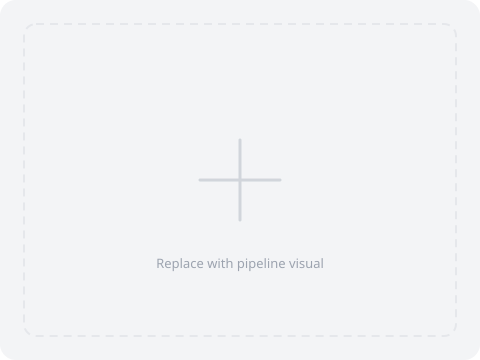

Hire Talents
Immediate access to vetted engineers, UI/UX designers, project managers, and marketing specialists — ready for contract or full-time engagement.
✓
Role-specific technical assessments
✓
Stack-matched shortlists in 48 hours
✓
Onboarding support & replacement window
